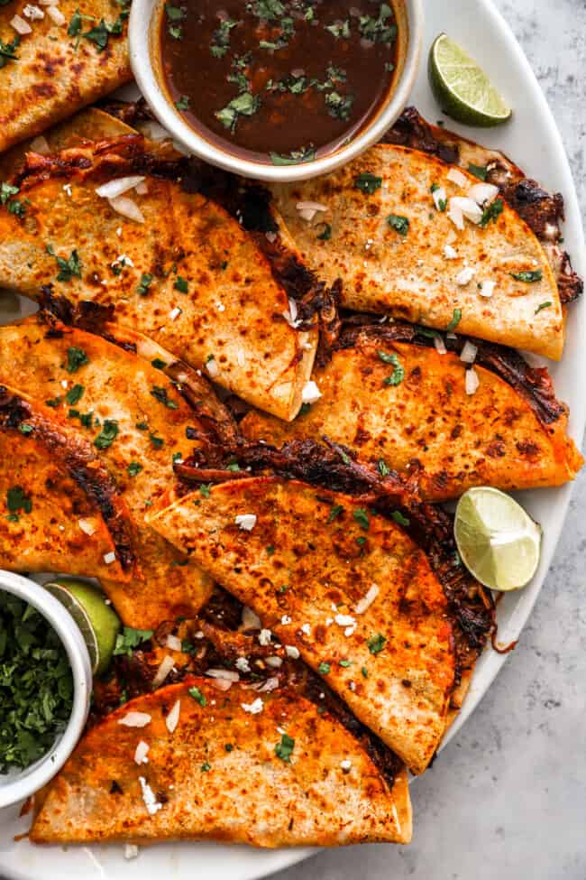
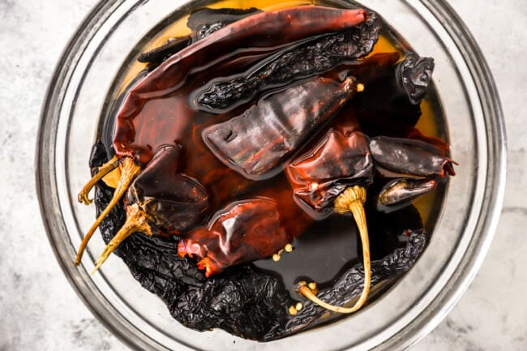
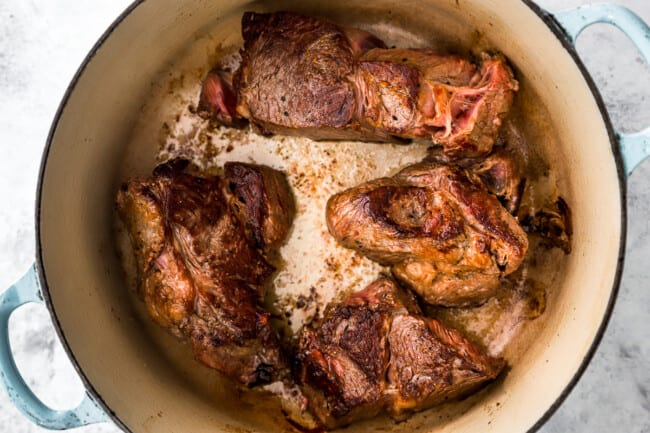
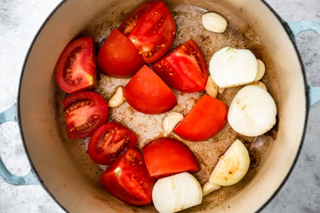
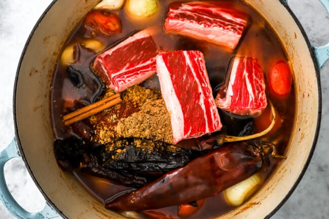
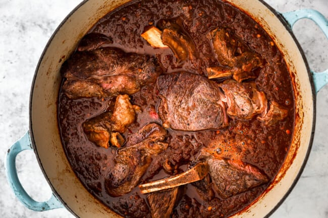
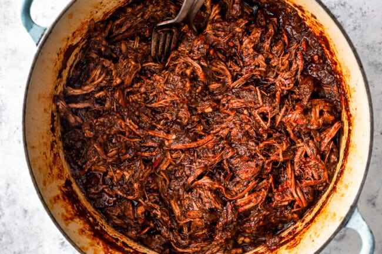
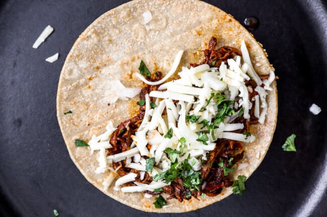

Birria Tacos Recipe

What’s in this Birria Tacos Recipe?
Cheesy, juicy, crispy, and loaded with flavor, these birria tacos are a must-try. Slow-cooked beef birria, encased in a crispy taco, with a divine dip – you will love them!
- Chiles: Stemmed and seeded dried Guajillo chiles and dried Ancho chiles give birria its characteristic deep red color and rich, complex flavor.
- Beef: I like the combination of chuck roast and bone-in short ribs, but you could use just one or the other. If you have it available, you can also use oxtail in place of the short ribs.
- Salt + Pepper: Season the beef thoroughly to bring out the flavor.
- Vegetable Oil: Helps the beef to cook without burning.
- Tomatoes: Help form the base of the braising liquid and add acidity and rich tomato flavor.
- Onion + Garlic: Add earthy flavor.
- Beef Broth: Forms the base of the braising liquid.
- Spices: Coriander, cumin, oregano, chili powder, and cinnamon are classic Mexican seasonings.
- Orange Juice: Adds acidity and citrus flavor to the braising liquid.
- Apple Cider Vinegar: Adds acidity to the braising liquid.
- Tortillas: I like corn tortillas for birria, but flour or cassava flour tortillas also work.
- Cheese: I’m a big fan of Monterey jack, but you can substitute your favorite cheese here.
- Cilantro: Adds a pop of freshness.
Instructions
For Stewed Meat:
- Place the Guajillo and Ancho chiles in a bowl full of near-boiling water. Allow the peppers to soak for at least 30 minutes.
6 dried Guajillo chiles,4 dried Ancho chiles

- While the peppers soak, season the chuck roast chunks with salt and pepper to taste.
3 pounds chuck roast,Kosher salt,Ground black pepper
- Heat 1 tablespoon of oil in a large Dutch oven set over medium-high heat. In 2 batches, sear the roast on all sides, using more oil as needed. Transfer the seared chuck roast to a plate and set aside.
2 tablespoons vegetable oil

- Add the remaining oil, tomatoes, onion, and garlic to the pot. Cook for 2-3 minutes.
3 vine tomatoes,1 white onion,8 cloves garlic

- Pour in the beef broth to deglaze the pot.
4 cups low sodium beef broth
- Transfer the hydrated chiles from the bowl of water to the pot. Add the short ribs, spices, and cinnamon stick. Bring the mixture to a boil, reduce the heat, and maintain a gentle simmer for 30 minutes.
1 ½ pounds bone-in short ribs
1 tablespoon ground coriander
2 teaspoons ground cumin
2 teaspoons dried oregano
1 teaspoon chili powder
1 cinnamon stick

- Remove the short ribs and add to the plate with the seared roast. Skim the top of the pot to remove any impurities from the bone cooking out. Remove the cinnamon stick and discard. Transfer about 1 ½ – 2 cups of the braising liquid to a bowl. Cover the bowl and refrigerate.
- Use an immersion blender to blend the remaining pepper and tomato mixture until smooth.
- Return the short ribs, seared beef, and any juices back to the Dutch oven. Add the orange juice, apple cider vinegar, salt, and pepper to taste. Bring to a simmer, cover, reduce heat to medium-low, and cook for at least 3-4 hours.
½ cup orange juice,¼ cup apple cider vinegar

- When the beef is cooked through, remove the short rib bones. Shred the meat with 2 forks.

For the Tacos:
- Remove the reserved braising liquid from the refrigerator. Working 1 tortilla at a time, dip the tortilla in the reserved liquid. Place the tortilla on a large skillet set over medium heat.
15 corn tortillas
- Top half of the tortilla with 1-2 tablespoons of shredded cheese, 2-3 tablespoons of shredded beef, and a sprinkle of onion and cilantro. Fold the tortilla in half to close.
2 cups shredded Monterey Jack cheese
1 cup chopped yellow onion
½ cup chopped fresh cilantro

- Cook the tacos for 30-45 seconds on each side until crisp. Transfer to a serving platter and squeeze fresh lime juice over the top.
Fresh limes wedges
- Repeat with the remaining tortillas and serve with any remaining braising liquid on the side for dipping.